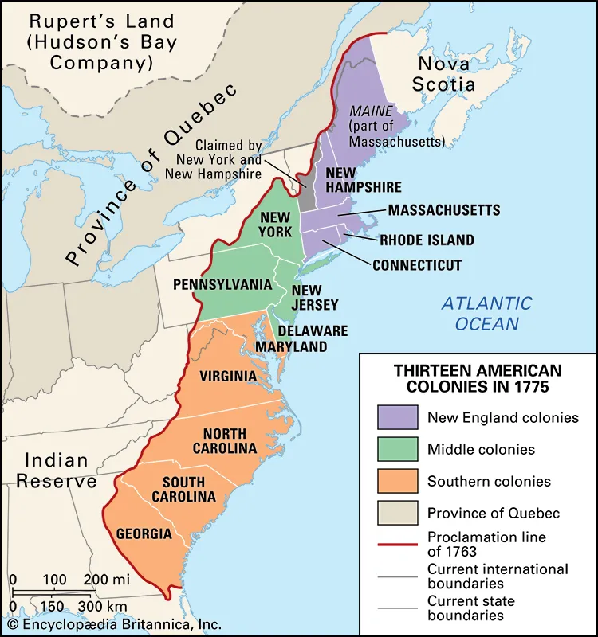
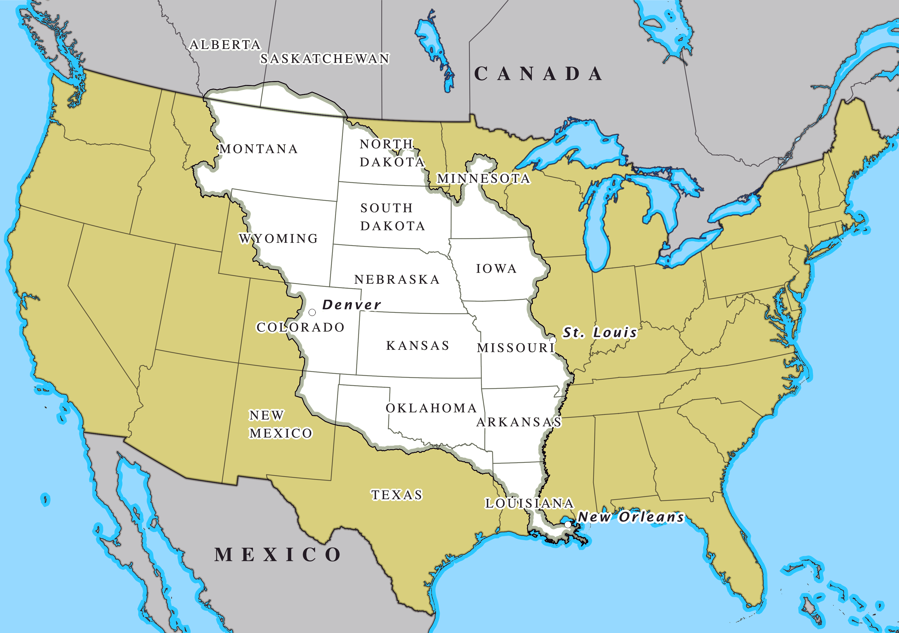
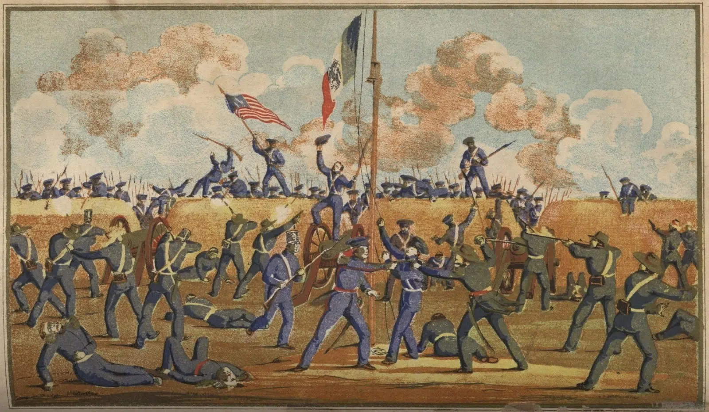

The territorial expansion of the United States
During the 17th and 18th centuries, there were thirteen British
colonies on the Atlantic east coast of North America. Grievances
against the imperial government led the 13 colonies to begin
uniting in 1774, and expelling British officials by 1775. After
gaining independence, American settlers started moving westward
in search of better fertile lands, among other reasons. Before
American independence, this westward movement was a concern for
the British government as they feared losing control over trade
and taxes.

By 1800, states and territories of the United States used in the
second census included Kentucky and Tennessee as well as the
NorthWest territories and the territories of Indiana and
Mississipi. In 1803, the United States acquired the louisiana
territory from Spain fulfilling the concept of Manifest Destiny
which further fueled westward migration, with pioneers and
settlers moving across the Appalachian Mountains to settle areas
like the Midwest, Great Plains, and eventually the West Coast.
In 1804, the territory was divided into the Orleans Territory
and the Louisiana District. The territoty of Orleans was
admitted into the Union as the state of Louisiana in 1812. To
avoid confusion, the northern part of Louisiana territory was
renamed Missouri Territory.The Louisiana purchase doubled the
size of the United states.

In 1821, the Adams-Onis Treaty between the US and new Spain
aquired West Florida to the US setting a boundary between US and
New Spain, now Mexico. In 1846, the Oregon treaty between the
United states and Britain was signed. Two years after, the US
made Oregon a territory which included all of the present day
states of Oregon, Washington, Idaho, and parts of Montana and
Wyoming.
Texas was annexed from the Republic of Texas after it claimed
independence from Mexico in 1836. This annexation occurred in
1845
The Treaty of Guadalupe, signed on February 2, 1848, ended the
war between the United States and Mexico. By its terms, Mexico
ceded 55% of its territory, including the present-day states
California, Nevada, Utah, New Mexico, most of Arizona and
Colorado, and parts of Oklahoma, Kansas, and Wyoming. This
region was referred to as Mexican Cession. Mexican residents in
the newly acquired territories were given the option to relocate
within Mexico's new boundaries or to stay and become U.S.
citizens

In 1854, the Gadsen Purchase saw the aquisition of present day
southern Arizona and south Western New Mexico by the United
States.
By 1866, part of the western half of the Indian Territory was
claimed by the United states and later became Oklahoma territory
in 1890.
In 1912, the United States officially had 48 states with the
Addition of Arizona and New Mexico.